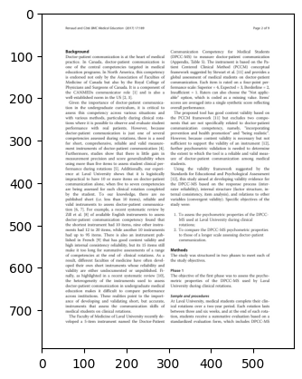
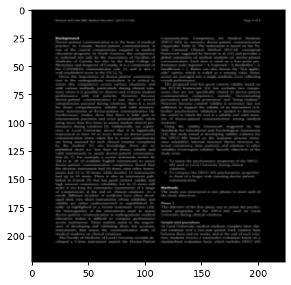

%matplotlib inline
import matplotlib.pyplot as plt
import torch.utils.data
import torch.nn
from random import randrange
import os
os.environ["WDS_VERBOSE_CACHE"] = "1"
os.environ["GOPEN_VERBOSE"] = "0"
The WebDataset Format
WebDataset format files are tar files, with two conventions:
- within each tar file, files that belong together and make up a training sample share the same basename when stripped of all filename extensions
- the shards of a tar file are numbered like
something-000000.tartosomething-012345.tar, usually specified using brace notationsomething-{000000..012345}.tar
WebDataset can read files from local disk or from any pipe, which allows it to access files using common cloud object stores. WebDataset can also read concatenated MsgPack and CBORs sources.
The WebDataset representation allows writing purely sequential I/O pipelines for large scale deep learning. This is important for achieving high I/O rates from local storage (3x-10x for local drives compared to random access) and for using object stores and cloud storage for training.
The WebDataset format represents images, movies, audio, etc. in their native file formats, making the creation of WebDataset format data as easy as just creating a tar archive. Because of the way data is aligned, WebDataset works well with block deduplication as well and aligns data on predictable boundaries.
Standard tools can be used for accessing and processing WebDataset-format files.
bucket = "https://storage.googleapis.com/webdataset/testdata/"
dataset = "publaynet-train-{000000..000009}.tar"
url = bucket + dataset
!curl -s {url} | tar tf - | sed 10q
PMC4991227_00003.json
PMC4991227_00003.png
PMC4537884_00002.json
PMC4537884_00002.png
PMC4323233_00003.json
PMC4323233_00003.png
PMC5429906_00004.json
PMC5429906_00004.png
PMC5592712_00002.json
PMC5592712_00002.png
tar: stdout: write error
Note that in these .tar files, we have pairs of .json and .png files; each such pair makes up a training sample.
WebDataset Libraries
There are several libraries supporting the WebDataset format:
webdatasetfor Python3 (includes thewidslibrary), this repository- Webdataset.jl a Julia implementation
- tarp, a Golang implementation and command line tool
- Ray Data sources and sinks
The webdataset library can be used with PyTorch, Tensorflow, and Jax.
The webdataset Library
The webdataset library is an implementation of PyTorch IterableDataset (or a mock implementation thereof if you aren't using PyTorch). It implements as form of stream processing. Some of its features are:
- large scale parallel data access through sharding
- high performance disk I/O due to purely sequential reads
- latency insensitive due to big fat pipes
- no local storage required
- instant startup for training jobs
- only requires reading from file descriptors/network streams, no special APIs
- its API encourages high performance I/O pipelines
- scalable from tiny desktop datasets to petascale datasets
- provides local caching if desired
- requires no dataset metadata; any collection of shards can be read and used instantly
The main limitations people run into are related to the fact that IterableDataset is less commonly used in PyTorch and some existing code may not support it as well, and that achieving an exactly balanced number of training samples across many compute nodes for a fixed epoch size is tricky; for multinode training, webdataset is usually used with shard resampling.
There are two interfaces, the concise "fluid" interface and a longer "pipeline" interface. We'll show examples using the fluid interface, which is usually what you want.
import webdataset as wds
pil_dataset = wds.WebDataset(url).shuffle(1000).decode("pil").to_tuple("png", "json")
The resulting datasets are standard PyTorch IterableDataset instances.
isinstance(pil_dataset, torch.utils.data.IterableDataset)
True
for image, json in pil_dataset:
break
plt.imshow(image)
<matplotlib.image.AxesImage at 0x7f6e34732dd0>

We can add onto the existing pipeline for augmentation and data preparation.
import torchvision.transforms as transforms
from PIL import Image
preproc = transforms.Compose([
transforms.Resize((224, 224)),
transforms.ToTensor(),
lambda x: 1-x,
])
def preprocess(sample):
image, json = sample
try:
label = json["annotations"][0]["category_id"]
except:
label = 0
return preproc(image), label
dataset = pil_dataset.map(preprocess)
for image, label in dataset:
break
plt.imshow(image.numpy().transpose(1, 2, 0))
<matplotlib.image.AxesImage at 0x7f6e347a1c90>

WebDataset is just an instance of a standard IterableDataset. It's a single-threaded way of iterating over a dataset. Since image decompression and data augmentation can be compute intensive, PyTorch usually uses the DataLoader class to parallelize data loading and preprocessing. WebDataset is fully compatible with the standard DataLoader.
The wds.WebDataset fluid interface is just a convenient shorthand for writing down pipelines. The underlying pipeline is an instance of the wds.DataPipeline class, and you can construct data pipelines explicitly, similar to the way you use nn.Sequential inside models.
dataset = wds.DataPipeline(
wds.SimpleShardList(url),
# at this point we have an iterator over all the shards
wds.shuffle(100),
# add wds.split_by_node here if you are using multiple nodes
wds.split_by_worker,
# at this point, we have an iterator over the shards assigned to each worker
wds.tarfile_to_samples(),
# this shuffles the samples in memory
wds.shuffle(1000),
# this decodes the images and json
wds.decode("pil"),
wds.to_tuple("png", "json"),
wds.map(preprocess),
wds.shuffle(1000),
wds.batched(16)
)
batch = next(iter(dataset))
batch[0].shape, batch[1].shape
(torch.Size([16, 3, 224, 224]), (16,))
Here are a number of notebooks showing how to use WebDataset for image classification and LLM training:
- train-resnet50-wds -- simple, single GPU training from Imagenet
- train-resnet50-multiray-wds -- multinode training using webdataset
- generate-text-dataset -- initial dataset generation
- tesseract-wds -- shard-to-shard transformations, here for OCR running over large dataset
Installation and Documentation
$ pip install webdataset
For the Github version:
$ pip install git+https://github.com/tmbdev/webdataset.git
Here are some videos talking about WebDataset and large scale deep learning:
- Introduction to Large Scale Deep Learning
- Loading Training Data with WebDataset
- Creating Datasets in WebDataset Format
- Tools for Working with Large Datasets
Examples: (NB: some of these are for older versions of WebDataset, but the differences should be small)
Dependencies
The WebDataset library only requires PyTorch, NumPy, and a small library called braceexpand.
WebDataset loads a few additional libraries dynamically only when they are actually needed and only in the decoder:
- PIL/Pillow for image decoding
torchvision,torchvideo,torchaudiofor image/video/audio decodingmsgpackfor MessagePack decoding- the
curlcommand line tool for accessing HTTP servers - the Google/Amazon/Azure command line tools for accessing cloud storage buckets
Loading of one of these libraries is triggered by configuring a decoder that attempts to decode content in the given format and encountering a file in that format during decoding. (Eventually, the torch... dependencies will be refactored into those libraries.)
Data Decoding
Data decoding is a special kind of transformations of samples. You could simply write a decoding function like this:
def my_sample_decoder(sample):
result = dict(__key__=sample["__key__"])
for key, value in sample.items():
if key == "png" or key.endswith(".png"):
result[key] = mageio.imread(io.BytesIO(value))
elif ...:
...
return result
dataset = wds.Processor(wds.map, my_sample_decoder)(dataset)
This gets tedious, though, and it also unnecessarily hardcodes the sample's keys into the processing pipeline. To help with this, there is a helper class that simplifies this kind of code. The primary use of Decoder is for decoding compressed image, video, and audio formats, as well as unzipping .gz files.
Here is an example of automatically decoding .png images with imread and using the default torch_video and torch_audio decoders for video and audio:
def my_png_decoder(key, value):
if not key.endswith(".png"):
return None
assert isinstance(value, bytes)
return imageio.imread(io.BytesIO(value))
dataset = wds.Decoder(my_png_decoder, wds.torch_video, wds.torch_audio)(dataset)
You can use whatever criteria you like for deciding how to decode values in samples. When used with standard WebDataset format files, the keys are the full extensions of the file names inside a .tar file. For consistency, it's recommended that you primarily rely on the extensions (e.g., .png, .mp4) to decide which decoders to use. There is a special helper function that simplifies this:
def my_decoder(value):
return imageio.imread(io.BytesIO(value))
dataset = wds.Decoder(wds.handle_extension(".png", my_decoder))(dataset)
"Smaller" Datasets and Desktop Computing
WebDataset is an ideal solution for training on petascale datasets kept on high performance distributed data stores like AIStore, AWS/S3, and Google Cloud. Compared to data center GPU servers, desktop machines have much slower network connections, but training jobs on desktop machines often also use much smaller datasets. WebDataset also is very useful for such smaller datasets, and it can easily be used for developing and testing on small datasets and then scaling up to large datasets by simply using more shards.
Here are different usage scenarios:
- desktop deep learning, smaller datasets
- copy all shards to local disk manually
- use automatic shard caching
- prototyping, development, testing of jobs for large scale training
- copy a small subset of shards to local disk
- use automatic shard caching with a small subrange of shards
- cloud training against cloud buckets
- use WebDataset directly with remote URLs
- on premises training with high performance store (e.g., AIStore) and fast networks
- use WebDataset directly with remote URLs
- on premises training with slower object stores and/or slower networks
- use automatic shard caching
Location Independence, Caching, Etc.
WebDataset makes it easy to use a single specification for your datasets and run your code without change in different environments.
Loadable Dataset Specifications
If you write your input pipelines such that they are defined by a dataset specification in some language, you can most easily retarget your training pipelines to different datasets. You can do this either by dynamically loading the Python code that constructs the pipeline or by using a YAML/JSON dataset specification.
A YAML dataset specification looks like this:
dataset:
- shards: gs://nvdata-ocropus-tess/ia1-{000000..000033}.tar
scaleprob: 0.3
- shards: gs://nvdata-ocropus-tess/cdipsub-{000000..000022}.tar
scale: [1.0, 3.0]
- shards: gs://nvdata-ocropus-tess/gsub-{000000..000167}.tar
scale: [0.4, 1.0]
- shards: gs://nvdata-ocropus-tess/bin-gsub-{000000..000167}.tar
extensions: nrm.jpg
scale: [0.3, 1.0]
- shards: gs://nvdata-ocropus/rendered.tar
scaleprob: 1.0
Note that datasets can be composed from different shard collections, mixed in different proportions.
The dataset specification reader will be integrated in the next minor version update.
AIStore Proxy
If you want to use an AISTore server as a cache, you can tell any WebDataset pipeline to replace direct accesses to your URLs to proxied accesses via the AIStore server. To do that, you need to set a couple of environment variables.
export AIS_ENDPOINT=http://nix:51080
export USE_AIS_FOR="gs"
Now, any accesses to Google Cloud Storage (gs:// urls) will be routed through the AIS server.
URL Rewriting
You can rewrite URLs using regular expressions via an environment variable; the syntax is WDS_REWRITE=regex=regex;regex=regex.
For example, to replace gs:// accesses with local file accesses, use
export WDS_REWRITE="gs://=/shared/data/"
To access Google cloud data via ssh, you might use something like:
export WDS_REWRITE="gs://=pipe:ssh proxyhost gsutil cat "
Use the Caching Mechanism
If you use the built-in caching mechanism, you can simply download shards to a local directory and specify that directory as the cache directory. The shards in that directory will override the shards that are being downloaded. Shards in the cache are mapped based on the pathname and file name of your shard names.
Direct Copying of Shards
Let's take the OpenImages dataset as an example; it's half a terabyte large. For development and testing, you may not want to download the entire dataset, but you may also not want to use the dataset remotely. With WebDataset, you can just download a small number of shards and use them during development.
!curl -L -s http://storage.googleapis.com/nvdata-openimages/openimages-train-000000.tar > /tmp/openimages-train-000000.tar
dataset = wds.DataPipeline(
wds.SimpleShardList("/tmp/openimages-train-000000.tar"),
wds.tarfile_to_samples(),
)
repr(next(iter(dataset)))[:200]
"{'__key__': 'e39871fd9fd74f55', '__url__': '/tmp/openimages-train-000000.tar', 'jpg': b'\\xff\\xd8\\xff\\xe0\\x00\\x10JFIF\\x00\\x01\\x01\\x01\\x01:\\x01:\\x00\\x00\\xff\\xdb\\x00C\\x00\\x06\\x04\\x05\\x06\\x05\\x04\\x06\\x06\\"
Note that the WebDataset class works the same way on local files as it does on remote files. Furthermore, unlike other kinds of dataset formats and archive formats, downloaded datasets are immediately useful and don't need to be unpacked.
Creating a WebDataset
Using tar
Since WebDatasets are just regular tar files, you can usually create them by just using the tar command. All you have to do is to arrange for any files that should be in the same sample to share the same basename. Many datasets already come that way. For those, you can simply create a WebDataset with
$ tar --sort=name -cf dataset.tar dataset/
If your dataset has some other directory layout, you may need a different file name in the archive from the name on disk. You can use the --transform argument to GNU tar to transform file names. You can also use the -T argument to read the files from a text file and embed other options in that text file.
The tarp create Command
The tarp command is a little utility for manipulating tar archives. Its create subcommand makes it particularly simple to construct tar archives from files. The tarp create command takes a recipe for building
a tar archive that contains lines of the form:
archive-name-1 source-name-1
archive-name-2 source-name-2
...
The source name can either be a file, "text:something", or "pipe:something".
Programmatically in Python
You can also create a WebDataset with library functions in this library:
webdataset.TarWritertakes dictionaries containing key value pairs and writes them to diskwebdataset.ShardWritertakes dictionaries containing key value pairs and writes them to disk as a series of shards
Here is a quick way of converting an existing dataset into a WebDataset; this will store all tensors as Python pickles:
sink = wds.TarWriter("dest.tar")
dataset = open_my_dataset()
for index, (input, output) in dataset:
sink.write({
"__key__": "sample%06d" % index,
"input.pyd": input,
"output.pyd": output,
})
sink.close()
Storing data as Python pickles allows most common Python datatypes to be stored, it is lossless, and the format is fast to decode. However, it is uncompressed and cannot be read by non-Python programs. It's often better to choose other storage formats, e.g., taking advantage of common image compression formats.
If you know that the input is an image and the output is an integer class, you can also write something like this:
sink = wds.TarWriter("dest.tar")
dataset = open_my_dataset()
for index, (input, output) in dataset:
assert input.ndim == 3 and input.shape[2] == 3
assert input.dtype = np.float32 and np.amin(input) >= 0 and np.amax(input) <= 1
assert type(output) == int
sink.write({
"__key__": "sample%06d" % index,
"input.jpg": input,
"output.cls": output,
})
sink.close()
The assert statements in that loop are not necessary, but they document and illustrate the expectations for this
particular dataset. Generally, the ".jpg" encoder can actually encode a wide variety of array types as images. The
".cls" encoder always requires an integer for encoding.
Here is how you can use TarWriter for writing a dataset without using an encoder:
sink = wds.TarWriter("dest.tar", encoder=False)
for basename in basenames:
with open(f"{basename}.png", "rb") as stream):
image = stream.read()
cls = lookup_cls(basename)
sample = {
"__key__": basename,
"input.png": image,
"target.cls": cls
}
sink.write(sample)
sink.close()
Since no encoder is used, if you want to be able to read this data with the default decoder, image must contain a byte string corresponding to a PNG image (as indicated by the ".png" extension on its dictionary key), and cls must contain an integer encoded in ASCII (as indicated by the ".cls" extension on its dictionary key).
Writing Filters and Offline Augmentation
Webdataset can be used for filters and offline augmentation of datasets. Here is a complete example that pre-augments a shard and extracts class labels.
from torchvision import transforms
from itertools import islice
def extract_class(data):
# mock implementation
return 0
def preproc(image):
image = transforms.ToTensor()(image)
# more preprocessing here
return image
def augment_wds(input, output, maxcount=999999999):
src = wds.DataPipeline(
wds.SimpleShardList(input),
wds.tarfile_to_samples(),
wds.decode("pil"),
wds.to_tuple("__key__", "jpg;png", "json"),
wds.map_tuple(None, preproc, None),
)
with wds.TarWriter(output) as dst:
for key, image, data in islice(src, 0, maxcount):
print(key)
image = image.numpy().transpose(1, 2, 0)
image -= np.amin(image)
image /= np.amax(image)
sample = {
"__key__": key,
"png": image,
"cls": extract_class(data)
}
dst.write(sample)
Now run the augmentation pipeline:
url = "http://storage.googleapis.com/nvdata-openimages/openimages-train-000000.tar"
url = f"pipe:curl -L -s {url} || true"
augment_wds(url, "_temp.tar", maxcount=5)
e39871fd9fd74f55
f18b91585c4d3f3e
ede6e66b2fb59aab
ed600d57fcee4f94
ff47e649b23f446d
To verify that things worked correctly, let's look at the output file:
%%bash
tar tf _temp.tar
e39871fd9fd74f55.cls
e39871fd9fd74f55.png
f18b91585c4d3f3e.cls
f18b91585c4d3f3e.png
ede6e66b2fb59aab.cls
ede6e66b2fb59aab.png
ed600d57fcee4f94.cls
ed600d57fcee4f94.png
ff47e649b23f446d.cls
ff47e649b23f446d.png
If you want to preprocess the entire OpenImages dataset with a process like this, you can use your favorite job queueing or worflow system.
For example, using Dask, you could process all 554 shards in parallel using code like this:
shards = braceexpand.braceexpand("{000000..000554}")
inputs = [f"gs://bucket/openimages-{shard}.tar" for shard in shards]
outputs = [f"gs://bucket2/openimages-augmented-{shard}.tar" for shard in shards]
results = [dask.delayed(augment_wds)(args) for args in zip(inputs, outputs)]
dask.compute(*results)
Note that the data is streaming from and to Google Cloud Storage buckets, so very little local storage is required on each worker.
For very large scale processing, it's easiest to submit separate jobs to a Kubernetes cluster using the Kubernetes Job template, or using a workflow engine like Argo.
Whether you prefer WebDataset or Dataset is a matter of style.
Syntax for URL Sources
The SimpleShardList and ResampledShards take either a string or a list of URLs as an argument. If it is given a string, the string is expanded using the braceexpand library. So, the following are equivalent:
ShardList("dataset-{000..001}.tar")
ShardList(["dataset-000.tar", "dataset-001.tar"])
The url strings in a shard list are handled by default by the webdataset.url_opener filter. It recognizes three simple kinds of strings: "-", "/path/to/file", and "pipe:command":
- the string "-", referring to stdin
- a UNIX path, opened as a regular file
- a URL-like string with the schema "pipe:"; such URLs are opened with
subprocess.Popen. For example:pipe:curl -s -L http://server/fileaccesses a file via HTTPpipe:gsutil cat gs://bucket/fileaccesses a file on GCSpipe:az cp --container bucket --name file --file /dev/stdoutaccesses a file on Azurepipe:ssh host cat fileaccesses a file viassh
It might seem at first glance to be "more efficient" to use built-in Python libraries for accessing object stores rather than subprocesses, but efficient object store access from Python really requires spawning a separate process anyway, so this approach to accessing object stores is not only convenient, it also is as efficient as we can make it in Python.
Length Properties
WebDataset instances are subclasses of IterableDataset. These instances are not supposed to have a __len__ method, and some code actually tests for that.
If you want to have a length property on your dataset, use the with_length(n) method with whatever length you would like to set.
If you want to change the size of the epoch, i.e., if you want to force the iterator to quit after a given number of samples or batches, use the with_epoch method.
You can combine both methods; use with_length last.
Tar Header Overhead
Tar imposes a 512 byte overhead for each file stored in the archive. For most applications, this is not an issue because images and other content tends to be much larger.
If you have datasets that contain large amounts of small files (e.g., text-only training, etc.), this overhead may become significant. In that case, you have several options:
- store some or all of your sample in JSON, MsgPack, or CBOR format
- gzip-compress your tar file (use .tgz instead of .tar); WebDatset will automatically decompress
- pre-batch the data (not recommended)
Both of the first options are very simple. To store your entire sample in MsgPack format, do something like this:
# Writing
... construct sample ...
sample = dict(mp=sample)
writer.write(sample)
# Reading
dataset = ... initial construction ...
dataset = dataset.map(sample: sample["mp"])
... use sample as usual ...
Related Libraries and Software
The AIStore server provides an efficient backend for WebDataset; it functions like a combination of web server, content distribution network, P2P network, and distributed file system. Together, AIStore and WebDataset can serve input data from rotational drives distributed across many servers at the speed of local SSDs to many GPUs, at a fraction of the cost. We can easily achieve hundreds of MBytes/s of I/O per GPU even in large, distributed training jobs.
The tarproc utilities provide command line manipulation and processing of webdatasets and other tar files, including splitting, concatenation, and xargs-like functionality.
The tensorcom library provides fast three-tiered I/O; it can be inserted between AIStore and WebDataset to permit distributed data augmentation and I/O. It is particularly useful when data augmentation requires more CPU than the GPU server has available.
You can find the full PyTorch ImageNet sample code converted to WebDataset at tmbdev/pytorch-imagenet-wds